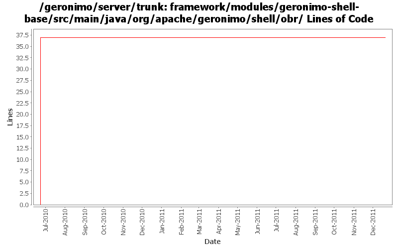

[root]/framework/modules/geronimo-shell-base/src/main/java/org/apache/geronimo/shell/obr

| Author | Changes | Lines of Code | Lines per Change |
|---|---|---|---|
| Totals | 3 (100.0%) | 39 (100.0%) | 13.0 |
| gawor | 2 (66.7%) | 38 (97.4%) | 19.0 |
| djencks | 1 (33.3%) | 1 (2.6%) | 1.0 |
GERONIMO-6240 Update to changed jline and moved shell annotations
1 lines of code changed in 1 file:
GERONIMO-5702: Update for Karaf 2.1.2. Based on patch from Viola Lu
1 lines of code changed in 1 file:
Improved Geronimo OBR support. Contains fix for GERONIMO-5392 as well as support for excludes and a shell command for refreshing the repository
37 lines of code changed in 1 file: